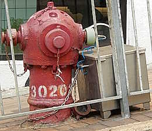
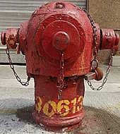
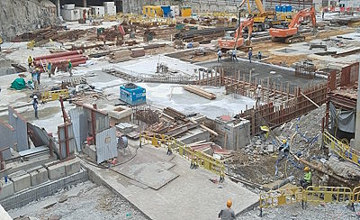
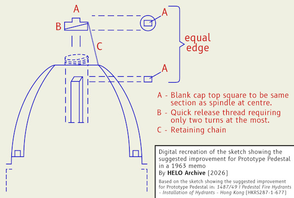
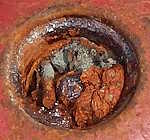
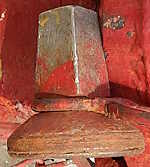

"Prototype Pedestal" in Hong Kong
[Sources for this page]Sources for this page
- Clément Bucco-Lechat, on Y2012-M10-D27 | Red hydrant in Hong-Kong | Wikimedia Commons | https://commons.wikimedia.org/wiki/File:Hydrant_in_Hong-Kong.JPG
- Fire Services Department (British Hong Kong), on Y1963-M08-D29 | Memo - in HKI FB 1/76/53 - Prototype Pedestal Fire Hydrant (in HKRS287-1-677 Pedestal Fire Hydrants - Installation of Hydrants - Hong Kong) | Public Records Office, Government Records Service (HKSAR Government)
- Fire Services Department (British Hong Kong), on Y1963-M09-D20 | Memo - in HKI FB 1/76/58 - Prototype Pedestal Fire Hydrant (in HKRS287-1-677 Pedestal Fire Hydrants - Installation of Hydrants - Hong Kong) | Public Records Office, Government Records Service (HKSAR Government)
- Google | Google Maps (Street View) | https://www.google.com/maps/
- HK90's Designer | HK90's-Hong Kong Special style Fire Hydrant Maps | Google Maps My Maps | https://www.google.com/maps/d/viewer?mid=1z_guAyS7KZEnPRg6ZdtJjCkD8_xp_akF
- moddsey, on Y2009-M09-D24 | Rediffusion Inspection Covers | Gwulo website | https://gwulo.com/comment/9800#comment-9800
- philk, on Y2011-M04-D16 | Another style of hydrant (in Old Fire Hydrant - Waterloo Rd) | Gwulo website | https://gwulo.com/comment/17122#comment-17122
- tngan, on Y2022-M04-D23 | Hong Kong Electric site in Ap Lei Chau | Gwulo website | https://gwulo.com/media/48349
- tngan, on Y2023-M12-D24 | Fire Hydrant inside HKE plant, after highrise demolition | Gwulo website | https://gwulo.com/media/47912
- tngan, on Y2023-M12-D24 | Fire Hydrant inside HKE plant, after highrise demolition, close up | Gwulo website | https://gwulo.com/media/47913
- Water Authority (British Hong Kong), on Y1963-M08-D08 | Memo - Ref 423 in W. W. O. 1437/49 - Prototype Pedestal Fire Hydrant (in HKRS287-1-677 Pedestal Fire Hydrants - Installation of Hydrants - Hong Kong) | Public Records Office, Government Records Service (HKSAR Government)
All known "Prototype Pedestal" are red. I will explain why I call this type the "Prototype Pedestal" at the end.
"Prototype Pedestal" that still exist
All four extant "Prototype Pedestals" are special in their own ways.
Number 454 (previously 45) is the only extant "Prototype Pedestal" that I know of that is not obstructed in the front, which means you can take a good front photo of a "Prototype Pedestal".
Number 659 is the only extant "Prototype Pedestal" that I know of that is inside a fire station, which makes photography of 659 somewhat challenging.
Number 30202 (previously 20) is currently the only extant "Prototype Pedestal" that I know of that is being hydraulic tested.
Number 30613 (previously 38) is the only extant "Prototype Pedestal" that I know of that has its "blank cap" detached, exposing the operating nut inside the hydrant.
 |
| red "Prototype Pedestal" 454 (previously 45) |
| Eastern Hospital Road at Tung Wah Eastern Hospital |
| Photo taken in Y2026-M04 |
 |
| red "Prototype Pedestal" 659 |
| Shau Kei Wan Fire Station |
| Photo taken in Y2026-M08 |
 |
| red "Prototype Pedestal" 30202 (previously 20) |
| Wong Nai Chung Road at Shan Kwong Road |
| Photo taken in Y2026-M04 |
 |
| red "Prototype Pedestal" 30613 (previously 38) photographed at a close distance, resulting in the front outlet nozzle appearing much bigger than in a photograph taken from far away |
| Queen's Road West outside Tung Hing Court |
| Photo taken in Y2026-M03 |
"Prototype Pedestal" that were removed
As far as I know, there were two "Prototype Pedestals" that had been removed.
Number 387 used to be on Des Voeux Road Central at Jubilee Street, but it was removed at some point between Y2011-M08 and Y2017-M01 according to Google Maps street view.
There was a "Prototype Pedestal" located outside a building at the Hongkong Electric Company headquarters in Ap Lei Chau. Netizen tngan's photo of the site taken on Y2023-M12-D24 showed that the "Prototype Pedestal" had an additional part of unknown purpose attached onto the blank cap on top, with the hydrant key resting on the part. tngan's photo also captured a sign on the hydrant, which appeared to warn construction site workers not to damage or interfere with the hydrant. I visited the site in person on Y2026-M04-D30 and I believe this "Prototype Pedestal" had already been removed. All I could see were construction material, workers, and machinery cluttering the area.
 |
| The "Prototype Pedestal" would be somewhere in this photo if it still existed at the Hongkong Electric Company headquarters |
| Site of the former Hongkong Electric Company headquarters |
| Photo taken in Y2026-M04 |
Why I call this type the "Prototype Pedestal" here
Someone online called this type the "diving helmet hydrant" (in Chinese), but I don't know if it is the official Chinese name. While I am yet to find the official name of this hydrant type, I decided to refer to it as the "Prototype Pedestal" until I find out about the official name. This is because I believe this type is the evolution of a hydrant referred to as the "Prototype Pedestal Fire Hydrant" in three memos between the Water Authority and the Fire Services Department in 1963. It all began on Y1963-M08-D08, when the Water Authority sent a memo to the Hong Kong Island District Fire Officer:
Prototype Pedestal Fire Hydrant
A prototype fire hydrant with the operating valve incorporated in the hydrant body is installed near the junction of Java Road/Tong Shui Road to replace the existing salt water hydrant No. SW 70.
You are requested to give the most vigorous testing possible to this hydrant commencing on Monday, 12th August 1963 for a period of two weeks.
As a contract will soon be let for the manufacture of a large number of such hydrants, it is most desirable that defects should be revealed as far as possible before this type of hydrant is mass-produced.
The District Fire Officer replied on Y1963-M08-D29, three days after the requested test period ended:
Prototype Pedestal Fire Hydrant
Your memo reference W.W.O. 1437/49 dated 8th August, 1963 refers please.
This hydrant has been tested daily for a period of eight days and such tests have so far revealed no defects.
I am however giving instructions that such tests should continue for a further period of twelve days from today and will report further at the end of this time.
After the extended test period ended, the Fire Services Department sent another memo to the Water Authority to suggest an improvement on Y1963-M09-D20. This memo also attached a sketch showing how the improvement would look like, which I have recreated digitally.
Prototype Pedestal Fire Hydrant
Your memo reference W.W.O. 1487/49 dated 8th August, 1963 and my memo of even reference dated 29th August 1963 refer please.
This prototype hydrant has been vigorously tested for twenty days and for the last twelve days has been fully operated at least three times a day. No defects have been observed and the operating valve incorporated in the hydrant body has functioned very efficiently.
One improvement suggested, however, is that in view of the small aperture that the operating spindle is housed in, there is a danger, over a period of time, of this aperture being filled up with papers, dirt, small stones, cigarette ends etc., making it difficult to fit the hydrant key on to the spindle. This could be prevented by fitting a blank cap over the operating spindle aperture as shown in the attached sketch.
 |
| Recreation of the sketch showing the suggested improvement for Prototype Pedestal in a 1963 memo |
| Based on the sketch showing the suggested improvement for Prototype Pedestal in: Pedestal Fire Hydrants - Installation of Hydrants - Hong Kong (HKRS287-1-677) |
| Recreated in Y2026-M08 |
You will note that:
- the blank cap has a coarse thread and should require only two turns at the most
- the blank cap is secured to the body of the hydrant by a chain
- the blank cap is removed using the hydrant valve key
If there are any further tests you require carrying out in connection with this prototype hydrant kindly let me know.
That sketch in the last memo clearly showed the unique characteristics of the type in real life: the big lid on top being secured onto the hydrant via bolts (and the edge of the lid being close to the outlet nozzles), and the blank cap on top with coarse threads. I think these evidence are convincing enough to prove that the Prototype Pedestal mentioned in the 1963 memos are at least connected to this type, if not directly referring to this type. Without a more suitable official name, I believe calling this type "Prototype Pedestal" is reasonable. If you are wondering why not just call it Pedestal, check out this page.
The last memo also predicted what would happen if there is no blank cap covering the aperture. Here are some close-up photos of number 30613, the blank cap of which had detached at some point between Y2024-M02 (the most recent Google Maps street view capture) and Y2026-M03-D22 (the day I visited 30613).
 |
| trash-filled aperture of red "Prototype Pedestal" 30613 (previously 38), the blank cap of which had detached |
| Queen's Road West outside Tung Hing Court |
| Photo taken in Y2026-M03 |
 |
| detached blank cap of red "Prototype Pedestal" 30613 (previously 38) |
| Queen's Road West outside Tung Hing Court |
| Photo taken in Y2026-M03 |